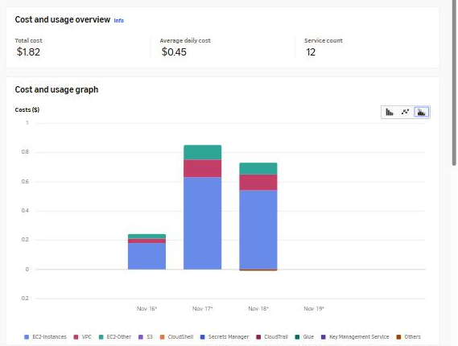

Results
Before and after
"Before" is the stock setup described on Baseline. "After" is the finished system. Every number has its date range next to it.
| Measure | Before | After | How measured · dates |
|---|---|---|---|
| Reachable by others | No (localhost) | Yes, HTTPS | Browser check · 17 Nov 2026 |
| Uptime seen by health check | Not measured | FILL-IN % of checks OK | SiteDown metric · FILL-IN to FILL-IN |
| Answer quality | Not measured; a generic bot can't answer campus questions | 30 / 30 | evaluate.py · 18 Nov 2026 |
| Average model answer time | Not measured | FILL-IN ms | AnswerLatencyMs · FILL-IN to FILL-IN |
| Time to detect full disk | Never | 13 min (6 min after passing 85%) | INC-01 · 18 Nov 2026 |
| Data we could lose (RPO) | Everything | ≤ 24 h | Backup schedule |
| Time to restore DB (RTO) | Impossible | 31 s | restore-test.sh · 18 Nov 2026 |
| Security problems open | 6 | 0 of those 6 (one new gap accepted: wide team access) | Security table |
| Cost | USD 0 (laptop) | About USD 0.80 per full day (USD 1.82 usage in total), all covered by the Free plan credits, so the bill is USD 0.00 | Cost Explorer, usage only, daily · 16 to 19 Nov 2026 |


Three test questions (E-03)
| # | Question | Answer (copied from the system) | Verdict |
|---|---|---|---|
| 1 | Where is the registrar office? | "Registrar's Office: Mabini Hall, Room 101." (20 Nov 2026, 14:00, gemini-3.5-flash-lite) | Pass: the right building and room, as in the handbook. Short, as the prompt asks. |
| 2 | Will I qualify for the academic scholarship? My GWA is 1.5. | "I cannot determine whether you qualify for a scholarship. Eligibility is decided by the Scholarship Committee." It then gave the Office of Student Affairs: Silang Building, 2nd floor, Mon–Sat 8:00–17:00, applications open every May. (17 Nov, gemini-3.5-flash) | Pass: it refused to decide and sent the student to the right office, as the handbook says. |
| 3 | Can I enroll if I still have an unpaid balance? | "I don't have that information. Please ask the Office of Student Affairs (Silang Building, 2nd floor)." (20 Nov 2026, gemini-3.5-flash-lite) | Fail, because the handbook does answer it: enrollment needs at least the PHP 5,000 down payment, paid at the Accounting Office (Mabini Hall, Room 105). It missed that and sent the student to the wrong office. Unsure answers always point to the OSA, even when another office is right. |
Quality measurement (E-04)
30 / 30 correct on 18 Nov 2026 (gemini-3.5-flash-lite, answers in 0.7–1.6 s), using scripts/evaluate.py (30 labelled questions, 25 answerable plus 5 that must be refused).

Read this score with care. We wrote the 30 questions ourselves, from our own handbook, so they test what we expected it to know. 100% means it answers our handbook well, not that it never errs. Question 3 above is one it gets wrong outside the test set.
What we would do next
- Move the database off the server (DocumentDB or MongoDB Atlas) and run the app in an Auto Scaling group of one. This fixes our biggest Reliability gap.
- Deploy automatically from GitHub (GitHub Actions running
deploy.shthrough SSM Run Command) so every change is tested and logged. - Close open registration: invite-only accounts or campus email domain only.
- Fix the fallback answer: when unsure, point to the office that handles the topic (Accounting for payments, the Library for library hours), not always the OSA, and add an unpaid-balance question to evaluate.py.
- Run evaluate.py nightly and alarm if the score drops, so handbook edits can't silently break answers.
- Stop the server outside class hours with an EventBridge schedule, roughly halving cost and footprint.